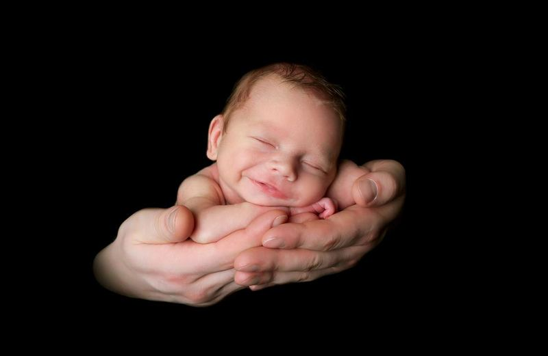
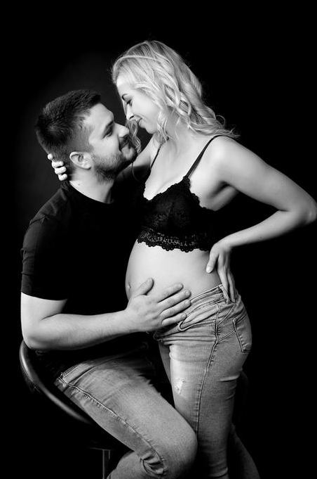
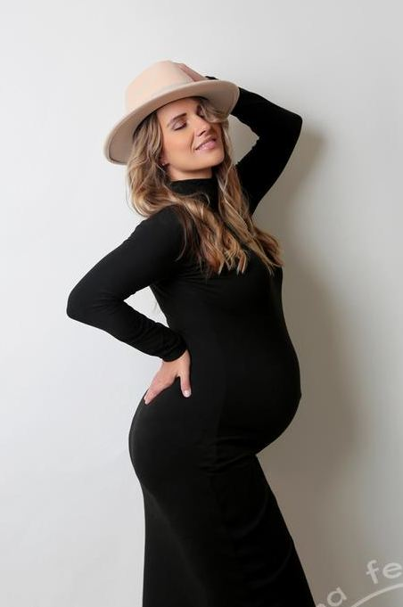
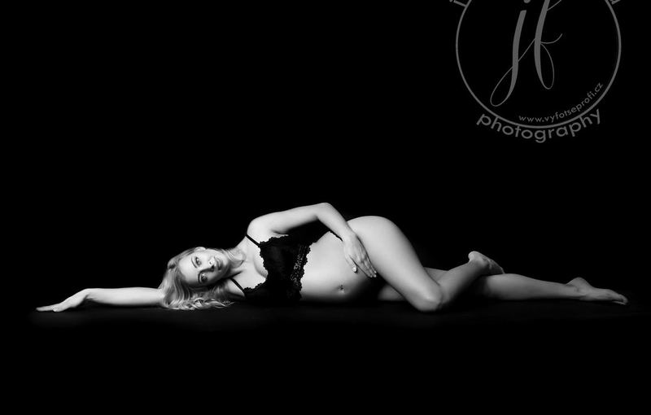
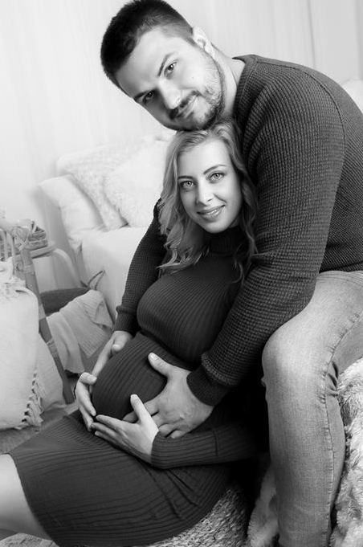
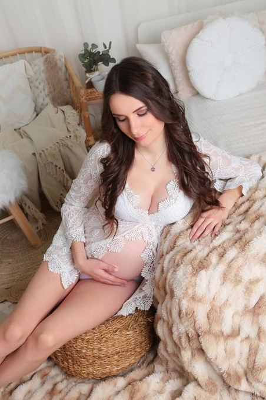
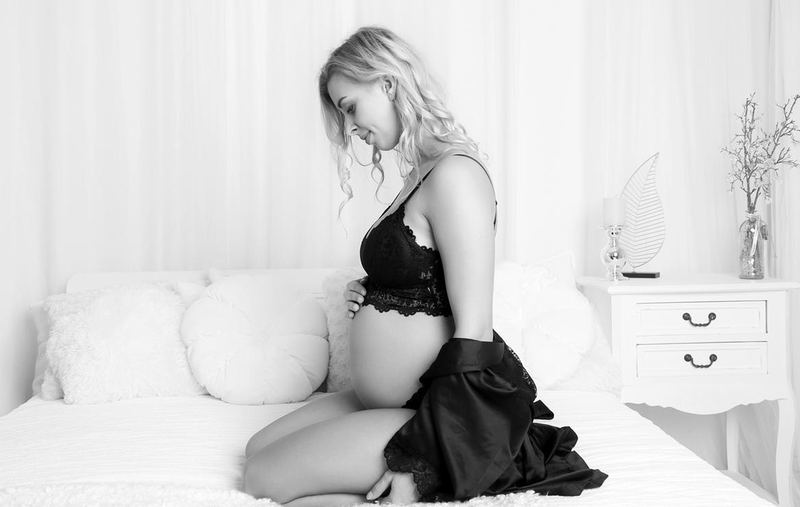
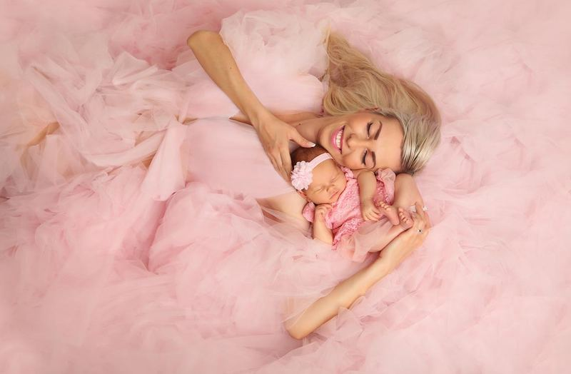
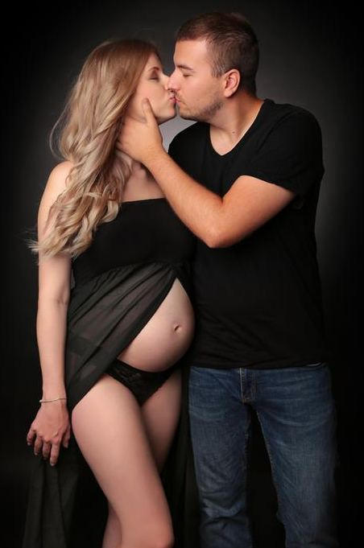
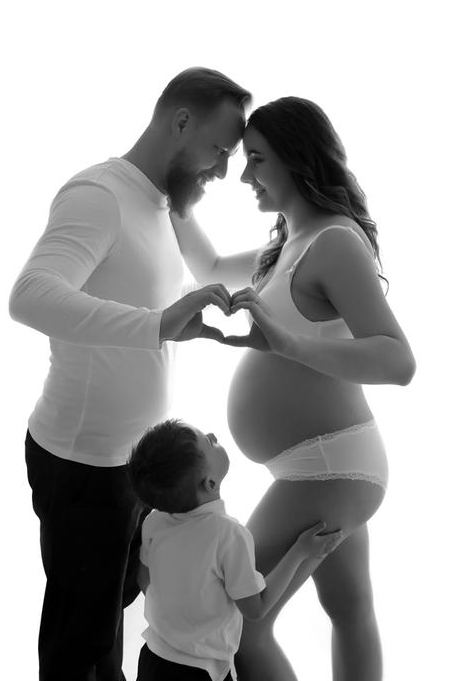

Ateliérové focení s vizáží
Jana Feilhauerová, ateliér v Mariánských Horách. Těhotenské, novorozenecké, rodinné a svatební focení, páry i portréty. Vizáž je součástí focení.

Jaké focení plánujete?
Vyberte a řeknu Vám, kdy je ten nejlepší čas a co si vzít s sebou.
Těhotenské
Nejhezčí bříško bývá mezi 30. a 36. týdnem.
Co s sebou: Oblečení, ve kterém se cítíte dobře. A partnera, pokud má být na fotkách.
Rezervovat toto foceníZ mého ateliéru
Ukázky z focení maminek, párů a rodin.









5,0 ze 2 hodnocení
„Velmi krásné a nápadité fotky. Doporučuji.“
zákazník na Firmy.cz
„Krásné fotografie, krásný ateliér.“
zákazník na Firmy.cz
- Ateliér
- Daliborova 483/10, Ostrava-Mariánské Hory
- Focení
- po domluvě termínu
- Photography Jana Feilhauerová